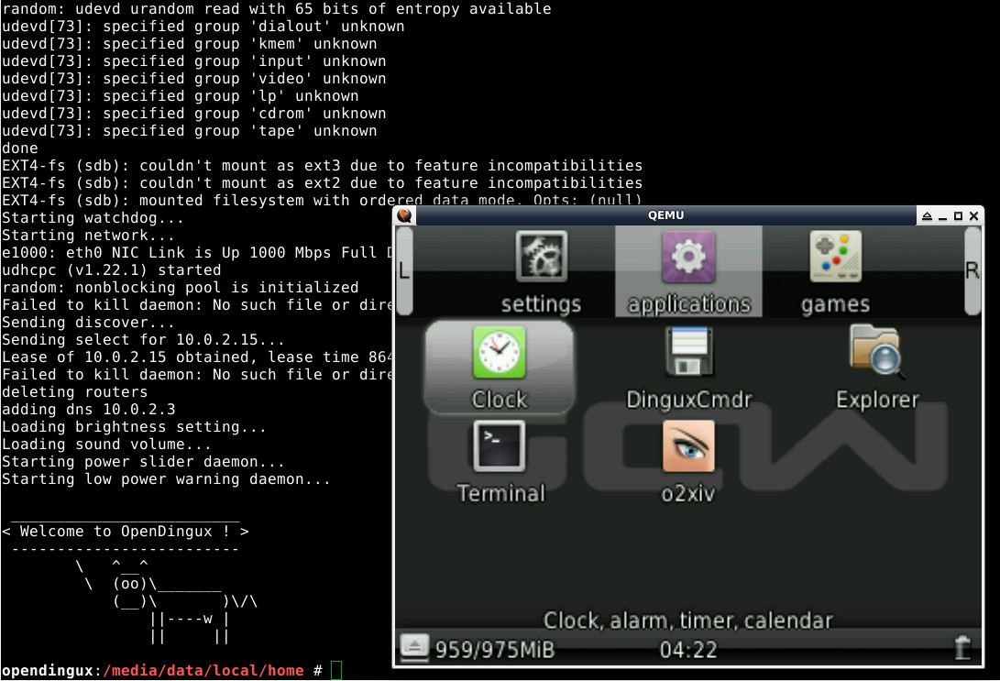

參考資訊： http://www.gcw-zero.com/news.php?id=13 http://prizma.bmstu.ru/~exmortis/posts/2015-05-02-gcw0-qemu.html 安裝步驟如下：
$ wget http://www.gcw-zero.com/files/gcw0-qemu.zip $ unzip gcw0-qemu.zip -d gcw0-qemu $ ./run-gcw0.sh
